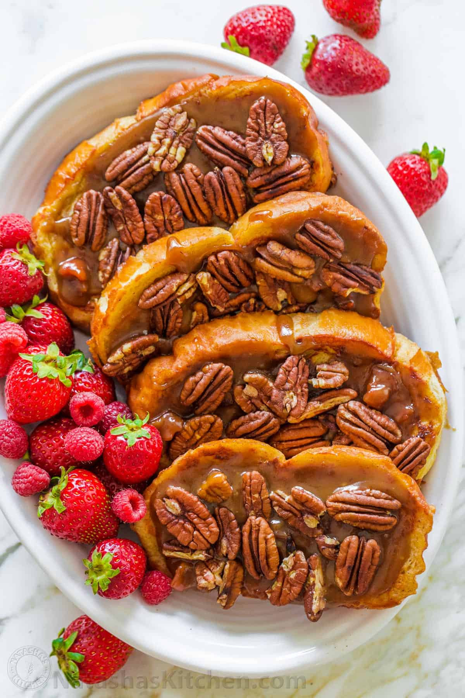

French Toast

French toast is an easy to make breakfast. You can mix and match many ingredients to make it taste like you want.
It is quick and painless to prepare and you can have it with your morning tea/coffee.
Ingredients
- 6 Slices of Bread
- 2 eggs
- 2/3 cup milk
- 1/4 spoon ground cinnamon (optional)
- 1/4 spoon ground nutmeg (optional)
- 1 spoon vanilla extract (optional)
- salt to taste
Steps
- Beat together egg, milk, salt, desired spices and vanilla.
- Heat a lightly oiled griddle or skillet over medium-high heat.
- Dunk each slice of bread in egg mixture, soaking both sides. Place in pan, and cook on both sides until golden. Serve hot.